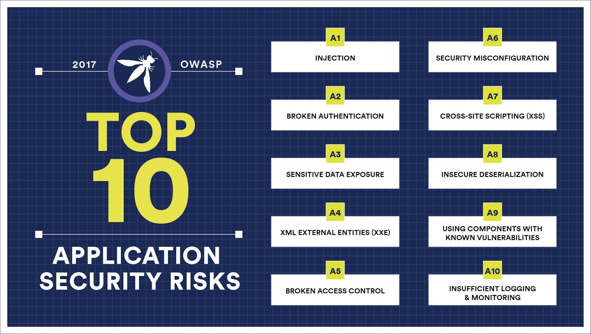

Burp Suite 101
A Web Security Tool Tutorial
Created by Alejandro Saenz
My Life Resume
Born and raised in Northern Virginia (NoVa). Graduated from the Virginia Commonwealth Unversity School of Engineering with a degree in Computer Science. A husband and father to a beautiful small familyProfessional Life
CareerCurrently work both in the field of software engineering and application security, both proprietary and open source
...also a Photographer
Checkout my portfolio built with Angular 7!Target Audience
- Web Application Developers
- Software Developers in Test
- Quality Assurance (QA) Testers
Lesson Goals
- Application Security (AppSec) Crash Course
- Brief Overview of the OWASP Top 10
- Burp Suite Fundamentals
- AppSec Workflow Integration
- Hacker-Think
Reminder
This is a 101 course!
Prerequisites
Setup: Environment
- Install Node.js
- Install Git (Optional)
- Get Juice Shop
- ```cd juice-shop && npm install```
- ```npm start```
Burp Suite Setup
- Download Burp Suite Community
- Download Burp Config
- Follow setup instructions
- Open Burp Suite Community
- Import Config from step 2
- Open Mozzilla FireFox
- Go to preferences
- ```about:preferences#general```
Burp Suite Setup

Burp Suite Setup

... Let's Begin
AppSec: A Definition
Application security encompasses measures taken to improve the security of an application often by finding, fixing ,and preventing security vulnerabilities.
A Blue Team
- Research and Development on target technologies
- Performs analysis on web application to identify and help remediate
security flaws
- Static Code Analysis
- Dynamic Testing
- Report delivery (Boring but necessary)
Why can't we just use vulnerabilty scanners in our CI/CD?
The Human Element
...and also because...
false positives
Eg, HP Fortify

Static Code Analysis
- Drinking coffee and reading code
- Learning the architecture
- Researching frameworks and libraries used
- Bookmarking problem locations
- Timebox efficiency!
Dynamic Testing
- Using the application as a user would
- Mapping and spidering the application
- Investigate HTTP requests and responses
- How does the application handle errors
- Authentication/Authorization
- Attempt exploitation
Reporting
- Create a high-level vulnerabilty report
- Easy to read for the non-technical brain
- EVIDENCE! EVIDENCE! EVIDENCE!
- SCREENSHOTS! SCREENSHOTS!
- HTTP Requests/Responses
- Problem locations
- Dynamic Testing: URLS
- SCA: relative paths and lines of code
- Remediation examples
How does AppSec effect you?
Story time...
Hey man. Have you heard of the concept Champions and Ninjas?

What's that? lol
Hunters and Warriors (Champions and Ninjas)
- Hunters
- Software Developers in Test && QA Testers (Manual)
- Utilize and practice AppSec while delivering user stories
- Additionally, create security-focused test cases
Hunters and Warriors (Champions and Ninjas)
- Warriors
- Web Application Developers
- Utilize and practice AppSec while delievering user stories
- Security focused design and development
TO BE CONTINUED...
The OWASP Foundation
The Open Web Application Security Project (OWASP) is an online community that produces freely-available articles, methodologies, documentation, tools, and technologies in the field of web application security.
The OWASP Top 10 Project
Juice Shop
OWASP Juice Shop is probably the most modern and sophisticated insecure web application! It can be used in security trainings, awareness demos, CTFs and as a guinea pig for security tools! Juice Shop encompasses vulnerabilities from the entire OWASP Top Ten along with many other security flaws found in real-world applications!
I'm also a contributor!
What is Burp Suite?
What is Burp Suite?
http proxy tool that appsec use